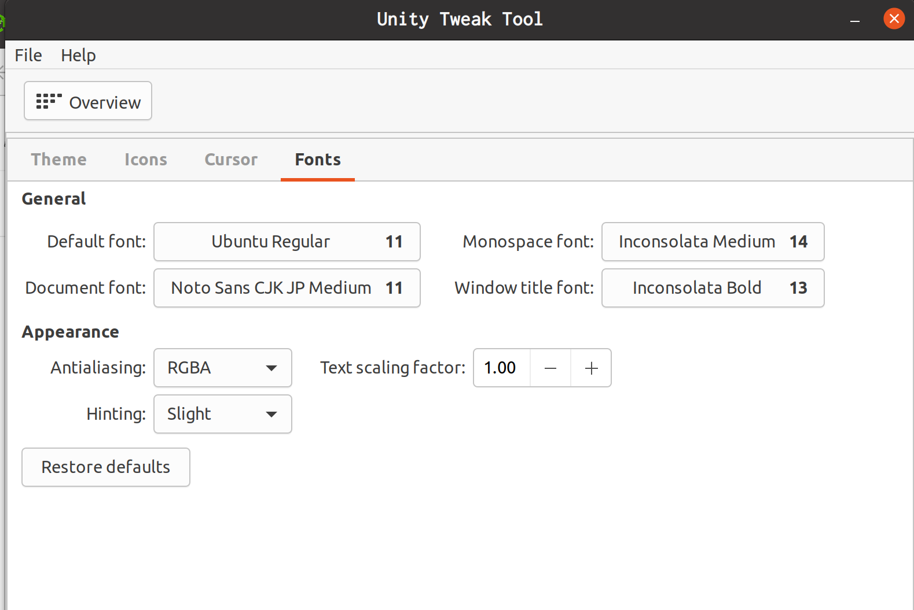

2022/03/17 21:55
Lie環の表現論の勉強をした．
休憩がてら，gitの勉強もした． branchの作り方や，mergeの仕方，GitHubでのプルリクを勉強した．
夜は妹にプログラミングを教えた． Pythonをgoogle colaboratoryで実行する仕方と，cppをAtCoderのコードテストで やる方法を教えた． 親にはそんなことやらなくていい，やるべきことは自分で見つければ良い，と いわれたが，おもしろいことの存在を一人で見つけることは限界があると思っていて，人に面白いことを教えてもらうことで面白いことを探す時間も増えるわけで， 私のほうが正しいと思っている．
2022/03/16 23:24
一昨日はuさんにspinとはなんだ，と質問されて，自分の理解を話していた． 古典的対応物がある角運動量を軌道角運動量，補集合をspin角運動量といい 前者は$\mathrm{SO}(3)$の表現で済むが，後者は$\mathrm{SU}(2)$を考えないといけない，と言う説明をした． spinが存在しなければいけないことは，通常のQMではわからずに，相対論的QFTまで いかないとダメと認識している． $\mathrm{SU}(2)$の出どころを気にされていて，通常の回転は$\mathrm{SO}(3)$ だが，状態はHilbert空間の元そのものではなく，$e^{i\theta}$倍の違いを同一視した同値類に対応している関係から，射影表現というものを考えなければいけないらしい． いろいろ調べてみた事実だけまとめておくと，Lie群では射影表現を考えることとdouble coveringを考えることはだいたい同じらしい．$\mathrm{SO}(n)$のdouble coveringは$\mathrm{Spin}(n)$とよばれ，$n=3$のとき$\mathrm{Spin}(3) = \mathrm{SU}(2)$となるらしい．
ここ数日，数物系サーバーのホームページを作っている． 自分のページではcssをほとんど使っていないのだが，さすがに，ということで， simple css を使っている．まあ，軽量のほうが良いでしょう，と思い．
ずっとわからないままおいてあった，完全可約を理解した． 行列でいえばブロック対角にできるものが完全可約で，既約表現はブロックが一つの 完全可約ならば，任意の表現はブロックが一つとみれば完全可約なのでは？ とか思っていたけど，非自明な任意の不変部分空間の補集合が 不変部分空間にならないといけないので，それはそうだった． 具体例は$2\times 2$上三角行列のなす群を考えると，上の空間は不変だが， 下の空間は変わってしまう． 既約表現は影響を及ぼし合う部分が完全に別れてしまうことが嬉しさなので，これではダメである．
2022/03/13 14:32
随分変な時間だが，ここ数日分． 先日書いたLegendre変換のpdfについて Discussionsにコメント がついた．非常に勉強になった．
数物系のホームページ作成も始めたが，おおきいホームページはなかなか難しい． あまり進捗はない模様．
あさから，PCのフォントを変えていた．英語設定なので，日本語のフォントが
気持ち悪くて変えようとずっと思っていたのだが，ようやく今日変えた．
このページ
を参考に，unity-tweak-toolをつかってGUIで変えた．
必要なパッケージがないとでたので，
この回答
を参考に
sudo apt install unity-lens-applications
sudo apt install unity-lens-files
として，解決．
コマンドラインのフォントは
結城浩さんのこだわり
を参考に，Inconsolataにした．
現在の設定はこんな感じ．

それから，vimでtwitterをするTwitVimというプラグインも入れてみた． なかなか操作性が難しい．
夜は数物系で雑談からの数学の話を聞いていた． 京大の講義で聞いた内容らしく，グラフの話で関数解析的な証明をおこなう， というものらしい．元ネタは arxiv:1510.04223 らしい． グラフの話もいろいろ聞かせてもらって，群の生成元をグラフの頂点に対応させる ケーリーグラフ や エキスパンダーグラフ というのがあるらしく，文献を書き留めておくまで．
2022/03/08 22:18
水素原子をやっていて，球面調和関数を知りたくなって勉強している． ここにあるpdf が杉浦，山内の連続群論入門の速習になって，よい．
2022/03/06 23:39
夜はyさんの環論入門セミナーを聞いていた． 整数の知識を具体例に出してやってくれたので，とてもわかりやすかった．
| 整数$\mathbb{Z}$ | 環$R$ |
|---|---|
| $n$の倍数 | ideal |
| 素数(の倍数) | 素ideal, 極大ideal |
| 分数の通分 | 環の局所化 |
| 有限個の素因数 | Noether環 |
おもしろかったのは，中国剰余定理で，主張は$\mathbb{Z}/mn\mathbb{Z}\simeq\mathbb{Z}/m\mathbb{Z}\times\mathbb{Z}/n\mathbb{Z}$． これは，アルゴリズムとかでも使えるらしく，大きい数の剰余を求めるときに使えるらしい． $m$, $n$でわったあまりを求めて，$l = \bar{m}m + \bar{n}n$とかにすればおおきいものの剰余も求められる．．
2022/03/04 23:44
数物で学んだことの復習をしてた．Legendre変換と量子力学ことを pdfにまとめていた．
ふと，線形写像のpull-backが気になって，思い出していた． 昔に書いたpdf を見つけて，懐かしい気持ちになっていた．改定したいけど，tex fileどこだろう．
2022/03/03 00:48
数物セミナーがおわって怠惰な日々を過ごしている．
数物セミナーは非常に楽しめたが，少し心残りなこともあって，量子力学を 数学側でされているuさんと議論ができなかったことだ． 物理的に面白いことを聞きたい，とおっしゃっていて，自分が運営にまわっている あいだ，他の人たちのの議論が白熱していて，自分は聴講に終始していて あまりお話することができなかった． 正直，自分のほうが，数学のひとに面白いことを言えるという思いもあった．
今日の夜，特別講演をしてくれたt先輩が，録画を流しながら 補足の解説をする会を開いていた．ちょうどそれがおわること， uさんがいらっしゃりuさんの講演も流すことになった． その際，yさんがわたしが話したがっていると伝えてくださり， 私がチャットで質問する形で，非常に楽しい議論ができた．
主に特別講演の内容の議論をして， self-adjoint operatorとstrongly continuous 1-parameter unitary groupの 対応で，物理と数学は逆に議論しているなあというコメントをすると それは数学でやっていることと同じだよ，といわれた．
参考文献として挙げられていた Quantum theory for mathematicians は，パッと見て物理の本と構成は似ていてとっつきやすいなあみたいな話 をすると，実は最初の6章くらいはお話重視で書かれているが， 途中でがっつりスペクトル理論の話が入ってくるのでそこそこしんどい， ともおっしゃっていた．
14章くらいには量子化の話が載っていて，最初の夜ゼミで話されていたような 内容が載っているそう．
strongly continuous one-parameter unitary groupは物理では作用素 に対する操作に対応づけるという議論があるが， このとき，微小変換というものも数学で定義できると教えていただいた．Brian Hallの17章あたりに載っているそうである．
CCRよりつよいWeyl CCRというのを使うと便利であることもあるが，物理では あまり見ないと思っていたが．これはdomainなのの微妙なところ を解消するためのもので，本質的なのはだいたい同じだそう． 早稲田の物理にWeyl CCRをやっている人がいるかもしれないそう．
Hille-Yoshidaの話題も出た．
講演の最後にされていたSegal-Bergmann変換の話は，それそのものに 量子力学的意味があるということではなく，Stone, von Neumannの定理の 証明の応用例としてだしたらしい．しかし，量子力学はHilbert空間上で self-adjoint operatorがあって，CCRをみたすという枠組みでは $\mathrm{L}^2$ 空間で考える必要はなく，むしろa.e.0の条件で割らなければ行けないものより， 各点がHilbert空間の元に対応しているSegal-Bergmann空間でやったほうが， コンピュータに落とすときにやりやすいのではないか，という考えも頂いた． 個人的には，SUSYQMのように可解構造に関わっているようなきもなんとなくした．
そんな感じで，非常に有益な情報と楽しい議論をしていただき， 非常に満足のゆく時間になった．